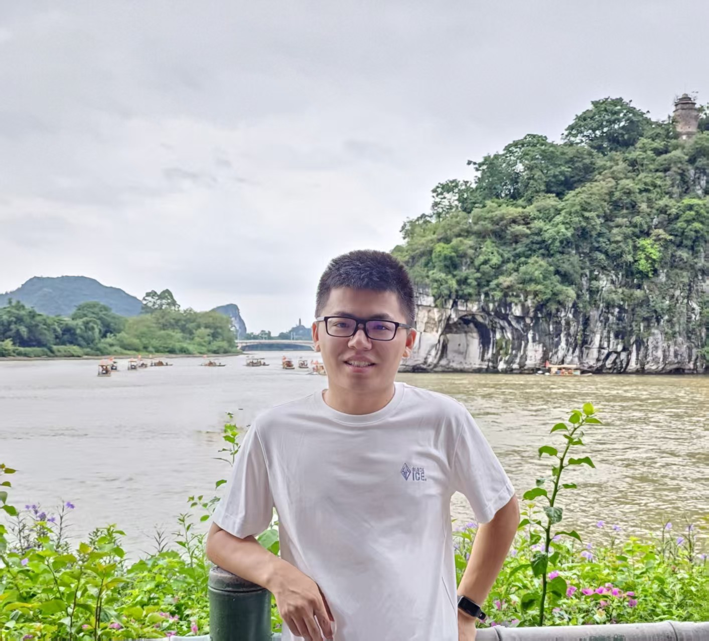
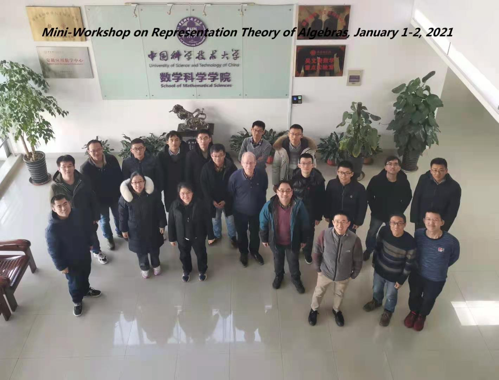
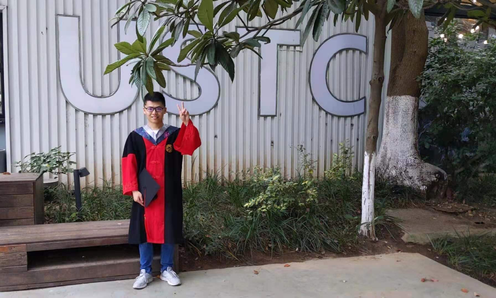
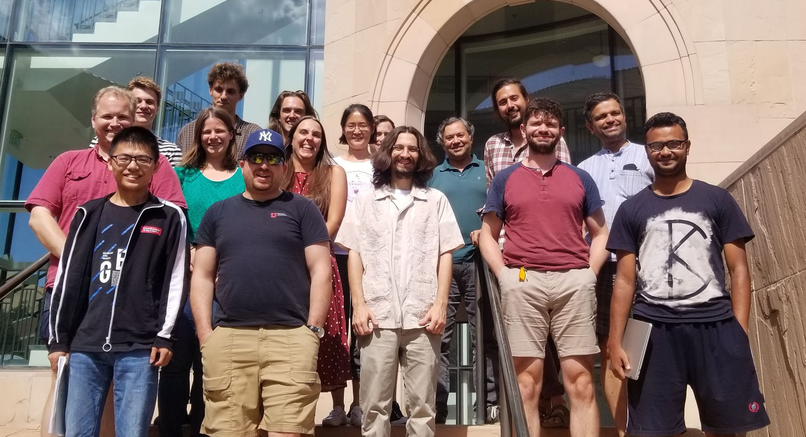

Welcome to Jian Liu (刘剑)’s Homepage！
About me

Publications and Preprints

14. "Some criteria for Gorensteinness via Gorenstein projective cotorsion pairs", with Souvik Dey and Xue-Song Lu, arXiv version.
13. "On local rings of finite syzygy representation type", with Souvik Dey, Kaito Kimura, and Yuya Otake, arXiv version.
12. "Openness with respect to levels in triangulated categories", with Souvik Dey and Liran Shaul, arXiv version.
11. "Generation of singularity categories and infinite injective dimension locus via annihilation of cohomologies", with Souvik Dey, Yuki Mifune, and Yuya Otake, arXiv version.
10. "Base change of (Gorenstein) transpose, k-torsionfree modules, and quasi-faithfully flat extensions", accepted in Journal of Algebra, arXiv version.
9. "Gorenstein local rings whose cohomological annihilator is the maximal ideal", with Souvik Dey, Publications of the Research Institute for Mathematical Sciences 2026, Published Pdf.
8. "Classifying thick subcategories over a Koszul complex via the curved BGG correspondence", with Josh Pollitz, Journal of the London Mathematical Society 2025, Published Pdf and arXiv version.
7. "Ascent and descent of Gorenstein homological properties", with Wei Ren, Journal of Pure and Applied Algebra 2025, Published Pdf and arXiv version.
6. "Annihilators and dimensions of the singularity category", Nagoya Mathematical Journal 2023, Published Pdf and arXiv version.
5. "A partial converse ghost lemma for the derived category of a commutative noetherian ring", with Josh Pollitz, Proceedings of the American Mathematical Society 2023, Published Pdf and arXiv version.
4. "Triangulated categories of periodic complexes and orbit categories", Czechoslovak Mathematical Journal 2023, Published Pdf and arXiv version.
3. "Exceptional complete intersection maps of local rings", with Srikanth Iyengar, Janina Letz, and Josh Pollitz, Pacific Journal of Mathematics 2022, Published Pdf and arXiv version.
2. "Singular equivalences induced by bimodules and quadratic monomial algebras", with Xiao-Wu Chen and Ren Wang, Algebras and Representation Theory 2021, Published Pdf and arXiv version.
1. "Duality and symmetry of complexity over complete intersections via exterior homology", with Josh Pollitz, Proceedings of the American Mathematical Society 2021, Published Pdf and arXiv version.
Links
- Conferences links: FDLIST, VCAS, Fellowship of the Ring, Commalg, MSRI-Video, BIRS-Video
- In 2025: Perspectives in non-commutative algebras, Hefei, Sep 9-20
- In 2024: HMRT 2024 in Lanzhou, ICRA2024 in Shanghai, ICTCRT 2024 in Changchun, Mini-course in Beijing, Workshop in Tianjin
- Links to Algebraists, Macaulay2 on Web
- University links: Yau MSC, Tsinghua, Fudan, Utah
- Mathematics Genealogy, I Love PDF, zbMATH
Teaching and Talks
- These are Talks. Fall 2023: Calculus at CCNU.
- Sep 2022–Jan 2023: Linear Algebra, Lecturer (SJTU), Textbook: Qifen Jiang and Jun Ma
- Sep 2018–Jan 2019: Linear Algebra A2, TA (USTC), lecture: Prof. Xiao-Wu Chen. Textbook: Shangzhi Li 2006
- Feb 2018–Jun 2018: Linear Algebra A1, TA (USTC), lecture: Prof. Xiao-Wu Chen. Textbook: Shangzhi Li 2006
- Sep 2017–Jan 2018: Elements of Algebra, TA (USTC), lecture: Prof. Xiao-Wu Chen. Textbook: Keqin Feng and Hongbing Yu 1999
- Feb 2017–Jun 2017: Complex Analysis, TA (USTC), lecture: Prof. Luo Luo. Textbook: Jihuai Shi and Taishun Liu 1998
Stories, Mathematics Sayings and Quotes
There are some real stories about Mathematicians: Grothendieck, Ramanujan, 陆家羲, 陈省身, 吴文俊, 肖刚. Mathematical sayings and quotes.
Photos
Here are some of my life and conference photos.


